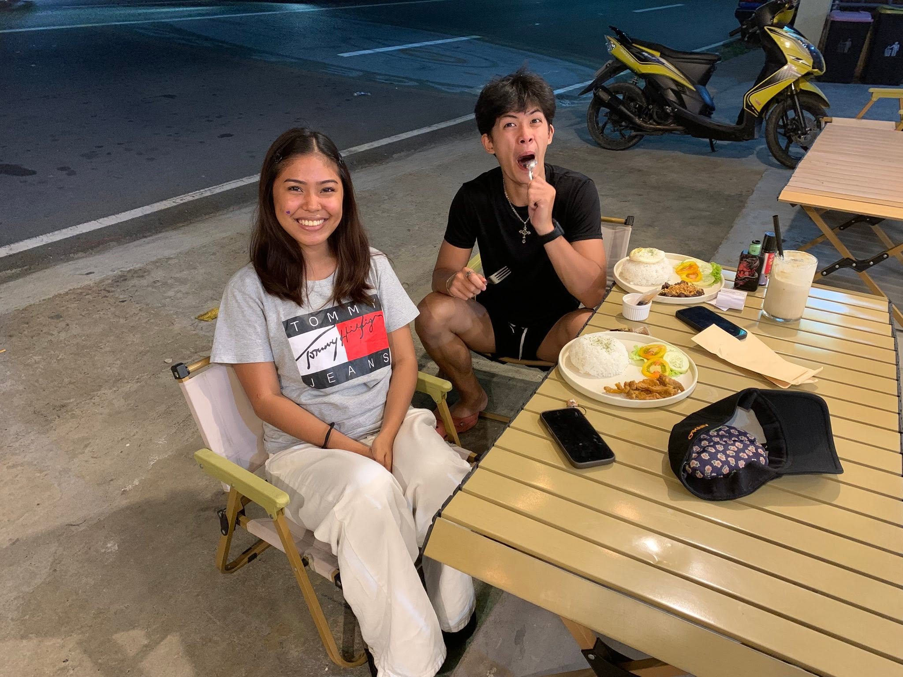
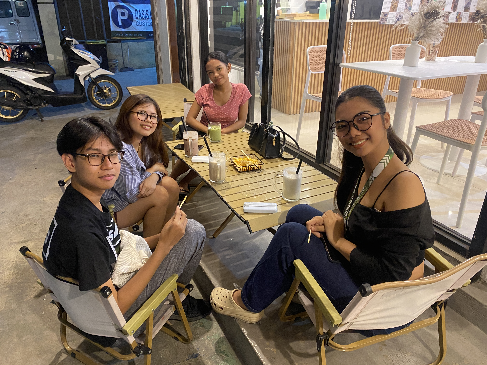
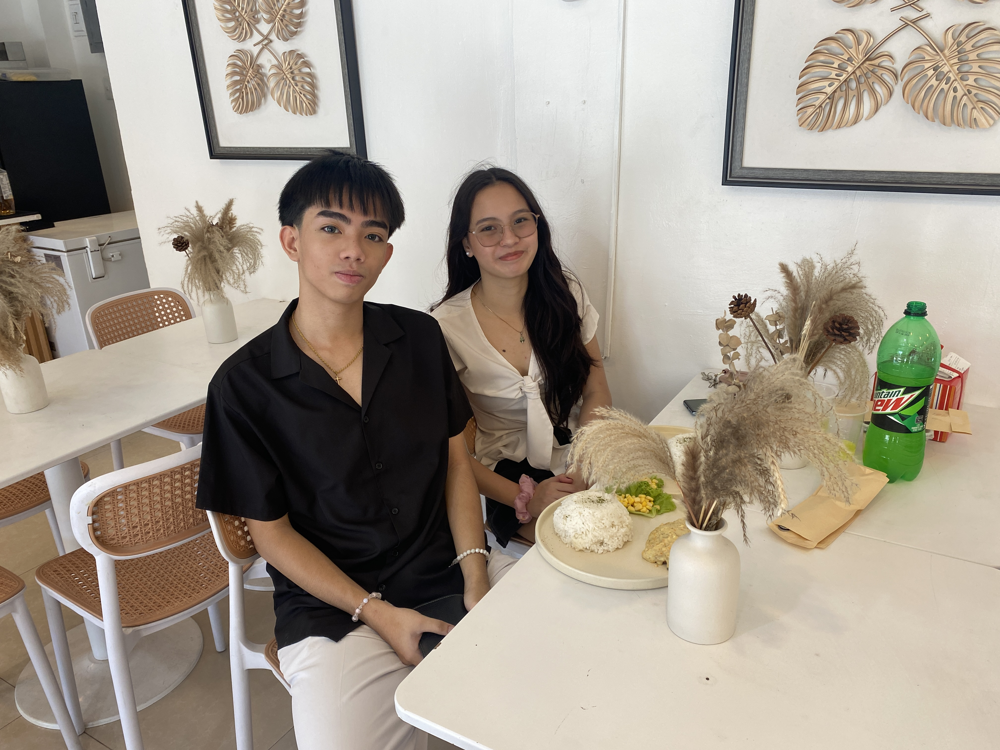
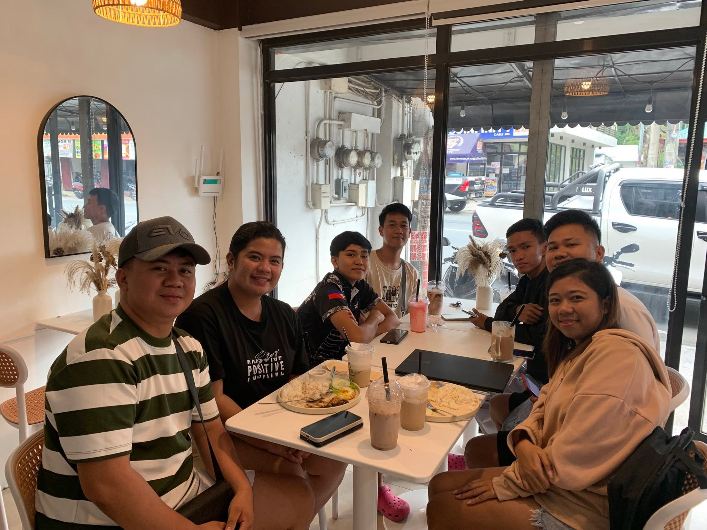
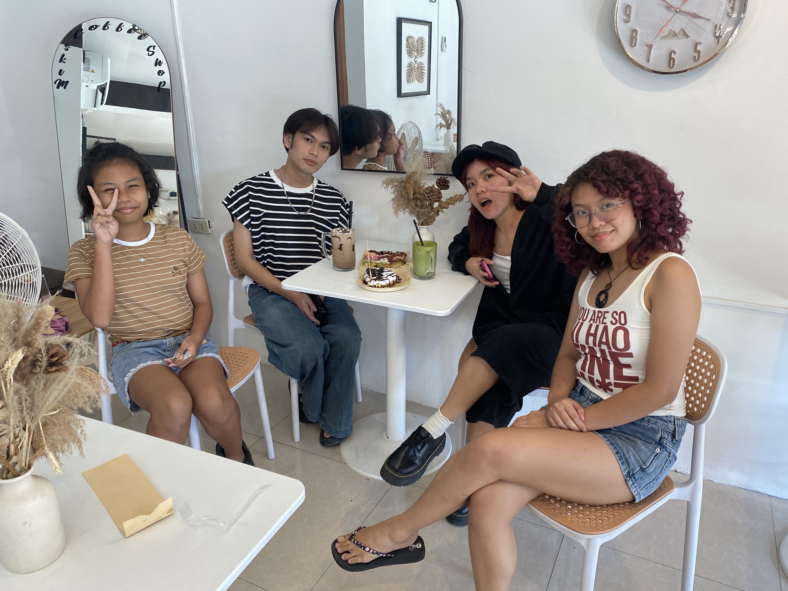
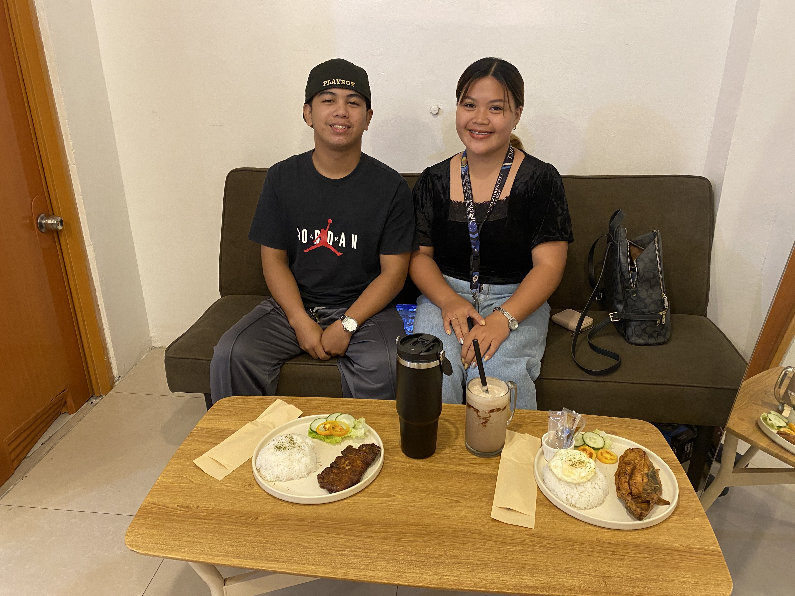

Miks Coffee Shop got its name from the owner, Marichris Lebrilla, who is also known as Kim. The name was created from a simple but meaningful idea: when the name "Kim" is reversed, it becomes "Mik". From this, the name Miks Coffee Shop was formed.
The word Miks also represents "mix", which reflects the variety of food and drinks that the coffee shop offers to its customers. It symbolizes creativity and the combination of different flavors that make the menu unique and enjoyable. Marichris Lebrilla created this business out of her passion for helping and giving opportunities to others, creating a place where people could work together and grow.
Even without complete resources at the start, the passion, dedication and heart behind Miks Coffee Shop helped it begin serving customers and continue growing over time.



The mission of Mik's Coffee Shop is to provide quality coffee, delicious food, and refreshing drinks while creating a warm and welcoming place for everyone. The coffee shop aims to bring people together and offer a variety of flavors that customers can enjoy.
Mik's Coffee Shop is also committed to helping others by providing opportunities for the community. Through passion, dedication, and service, the business strives to create not only good products at an affordable price so that more people can enjoy great coffee and food while supporting a business that values people and community.



The vision of Mik's Coffee Shop is to become a well-loved coffee shop known for its quality coffee, delicious food, and affordable prices. It aims to be a place where people feel comfortable, welcomed, and connected with one another.
Mik's Coffee Shop also envisions growing as a business that continues to create opportunities for the community while serving customers with passion, dedication, and excellent service.